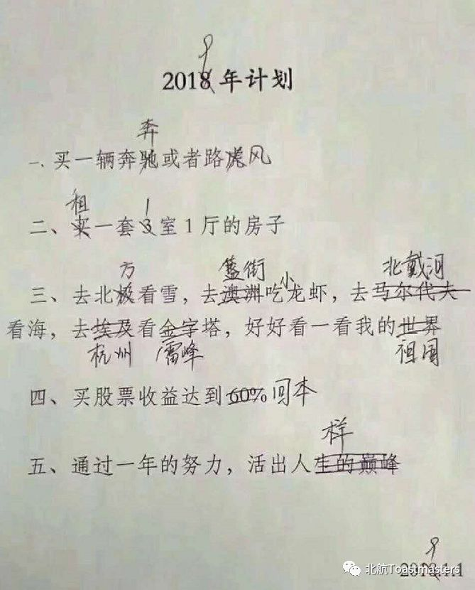
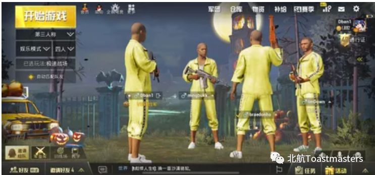
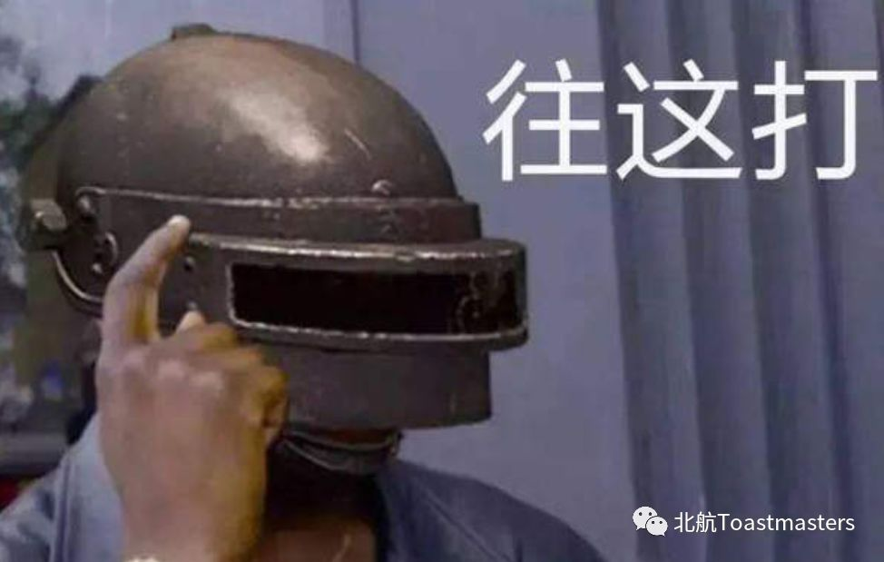
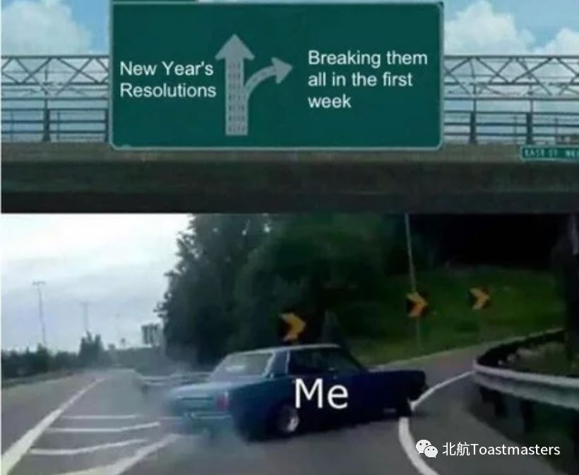
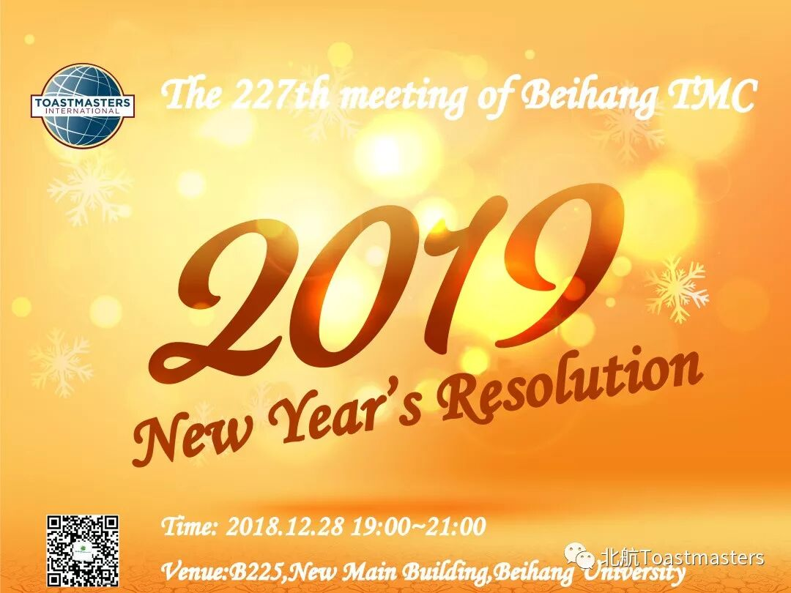
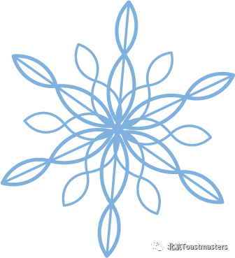
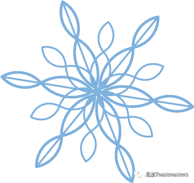

2018年的尾巴
2018年的你收获了什么
是否看过动人的风景
是否达到了自己的工作目标
是否阅读过一本印象深刻的书
是否拥有了羡慕的身材
是否遇到了新的人开始新的故事
是否经历了挑战
If the answer is No，it‘s ok～
我们还有时间 新的一年要来了
希望你可以获得一本梦寐以求的书
希望你可以经历意义非凡的事
希望你可以牵起喜欢的人的手
希望你可以拥有勇气做出改变
最希望的还是你可以出现在12.28号晚上的B225
跟我们一起迎接新年
至于我？2018年，我过得很充实
我看过动人的风景：
达到了自己的工作目标：

阅读过一本印象深刻的书：
拥有令人羡慕的身材：
遇到了新的人，开始新的故事

也迎接了新的挑战：

2019年，我期待你的到来~


简而言之，就是说本周五晚7点，新主楼B225，北航头马举办第227次会议“新年宣言”，一定要来，赶紧的！

NEW YEAR IS COMING

文案|Ellen，Chen
海报|Kaiyuan
编辑|Chen
（图片均来自网络，侵删）

找对象扫码
原文链接（公众号关闭后可能失效）：
https://mp.weixin.qq.com/s/EuPzMNGXImu5xJOm5bZe_Q
https://mp.weixin.qq.com/s/EuPzMNGXImu5xJOm5bZe_Q
第 498/539 篇 · 北航Toastmasters英文演讲俱乐部公众号存档
本页为抢救式本地归档，图文已永久保存。
本页为抢救式本地归档，图文已永久保存。